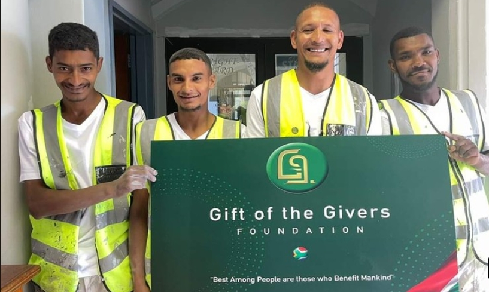

Frequently Asked Questions
Gift of the Givers is a humanitarian organisation that provides assistance to communities affected by disasters, poverty and emergencies.
You can support humanitarian work through donations, volunteering and community initiatives.
The organisation provides humanitarian assistance in South Africa and internationally.
About Gift of the Givers

Gift of the Givers Foundation is a humanitarian organisation that provides assistance to people and communities in need.
The organisation responds to disasters and provides support to communities facing difficult circumstances.
Our Purpose
The purpose of the organisation is to provide humanitarian assistance and support to communities affected by disasters, poverty and other challenges.
Our Main Areas
- Disaster relief
- Food assistance
- Healthcare
- Water projects
- Community support
- Humanitarian assistance